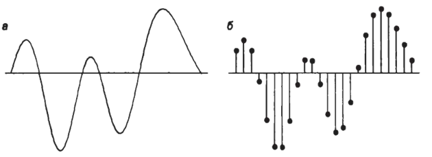
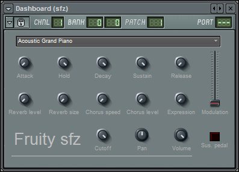
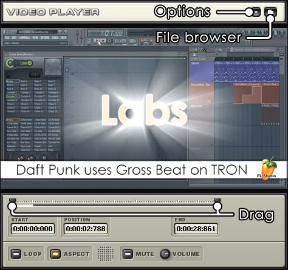
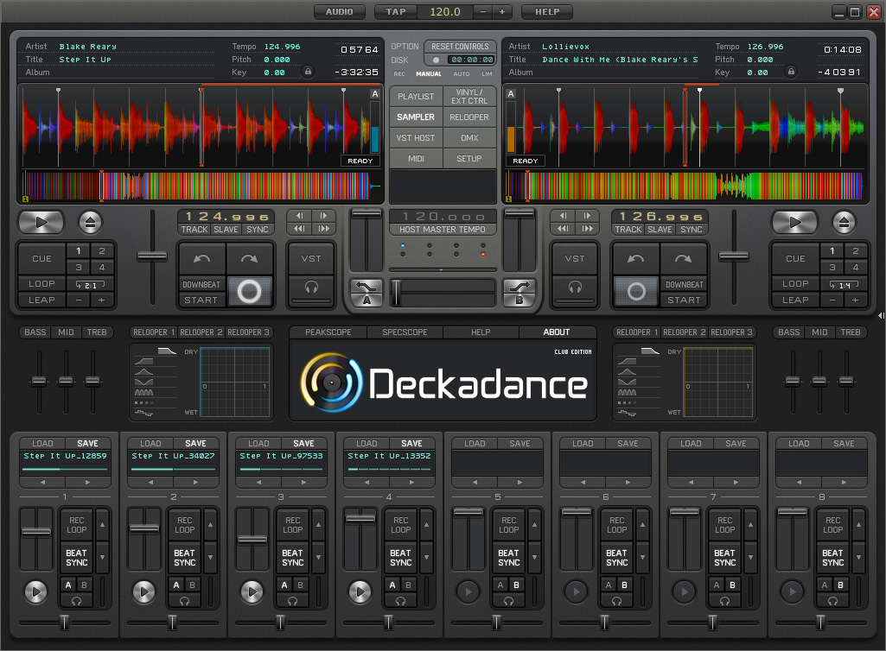

1. Введение
На протяжении человеческой истории искусство всегда было непрерывно связанно с технологиями. Технологии – это инструмент для творчества, с помощью которого рождается искусство. Наиболее зависимое от технологий искусство, на мой взгляд, это музыка. Возникновение и совершенствование музыкальных инструментов находится в прямой зависимости от состояния технологий в то или иное время. Их производство требует точного математического расчёта и выверенных пропорций между частями инструментов отвечающих за звукоизвлечение и формирование тембра звука.
Существует много людей, которые убеждены в том, что алгебра «бездушного компьютера» и гармония музыки – «вещи несовместные». Однако на самом деле у данных сфер гораздо больше общего, чем может показаться на первый взгляд. В определенном смысле музыкантов даже можно назвать первыми программистами, поскольку созданные ими механизмы, воспроизводящие музыку по заранее разработанной и заложенной в них программе, появились задолго до первых механических арифмометров. Да и нотные записи по сути своей есть не что иное, как подробное изложение алгоритма воспроизведения нот – музыкальных инструкций со своими блоками, условиями перехода, циклами и метками.
Цель работы: Оценить влияние современных компьютерных технологий на музыкальный мир.
Задачи: Рассмотреть способы представления музыки в компьютере: оцифровка звука, форматы звуковых файлов; проанализировать программы для создания и редактирования музыки; рассказать о жанрах музыки, появившихся благодаря компьютеру.
2.Представление музыки в компьютере
2.1. Оцифровка звука
В естественных условиях звуковая информация имеет аналоговую (непрерывную) форму представления. Компьютер же, как известно, способен работать с информацией, представленной в дискретном виде. Поэтому необходимо преобразование звуковой аналоговой формы в дискретную.
При дискретизации непрерывная звуковая волна разбивается на отдельные участки по времени, для каждого из которых устанавливается своя величина амплитуды. Каждой ступеньке присваивается свой уровень громкости звука, который можно рассматривать как набор возможных состояний.
Важной характеристикой при кодировании звука является частота дискретизации – количество измерений уровней сигнала за 1 секунду:
• 1 (одно) измерение в секунду соответствует частоте 1 Гц;
• 1000 измерений в секунду соответствует частоте 1 кГц.
Обычно количество измерений может лежать в диапазоне от 8 кГц до 48 кГц.
Не менее важной характеристикой звука является глубина кодирования.Современные звуковые карты обеспечивают 16-битную "глубину" кодирования звука.
Разложение звуковых сигналов в гармонические ряды и представление в виде дискретных цифровых сигналов выполняют специальные устройства – аналогово-цифровые преобразователи (АЦП). Например – микрофон.
Обратное преобразование для воспроизведения звука, закодированного числовым кодом, выполняют цифро-аналоговые преобразователи (ЦАП). Например – динамики.
2.2. Форматы звуковых файлов
Можно выделить 3 группы звуковых форматов файлов:
• аудиоформаты без сжатия, такие как WAV, AIFF;
• аудиоформаты со сжатием без потерь (APE, FLAC);
• аудиоформаты со сжатием с потерями (MP3, Ogg).
PCM
РСМ расшифровывается как pulse code modulation, что переводится как импульсно-кодовая модуляция. Файлы именно с таким расширением встречаются довольно редко. Но РСМ является основополагающей для всех звуковых файлов.
При импульсно-кодовой модуляции аналоговый передаваемый сигнал преобразуется в цифровую форму посредством трёх операций: дискретизации по времени, квантования по амплитуде и кодирования. Тут стоит отметить, что квантование – это, по сути, округление значения до ближайшего целого.
WAV
Самое простое хранилище дискретных данных. Помимо обычных дискретных значений, битности, количества каналов и значений уровней громкости, в WAV может быть указано еще множество неочевидных параметров – это: метки позиций для синхронизации, общее количество дискретных значений, порядок воспроизведения различных частей звукового файла, а также есть место для размещения текстовой информации.
MP3
MP3 является одним из самых распространённых и популярных форматов. Он может проигрываться во всех популярных операционных системах, на большинстве портативных аудиоплееров, а также поддерживается всеми современными моделями музыкальных центров.
В формате MP3 используется алгоритм сжатия с потерями, разработанный для существенного уменьшения размера данных, необходимых для воспроизведения записи и обеспечения качества воспроизведения звука, близкого к оригинальному (по мнению большинства слушателей), но с ощутимыми потерями качества при прослушивании на качественной звуковой системе. Принцип сжатия заключается в снижении точности некоторых частей звукового потока, что практически неразличимо для слуха на повсеместно распространённой аппаратуре низкой точности воспроизведения звука.
FLAC (Free Lossless Audio Codec)
FLAC предназначен для сжатия аудиоданных без потерь. В отличие от аудиокодеков, обеспечивающих сжатие с потерями, FLAC, как и любой другой lossless-кодек, не удаляет никакой информации из аудиопотока и подходит как для прослушивания музыки на высококачественной звуковоспроизводящей аппаратуре, так и для архивирования аудиоколлекции.
Сегодня формат FLAC поддерживается множеством аудиоприложений, портативных аудиоплееров и специализированных аудиосистем и имеет большое число разнообразных аппаратных реализаций.
Основными частями потока являются:
• Строка из четырёх байтов;
• Блок метаданных STREAMINFO;
• Другие необязательные блоки метаданных;
• Аудиофреймы.
Первые четыре байта идентифицируют поток FLAC. Следующие за ними метаданные содержат информацию о потоке, затем идут сжатые аудиоданные.
Разные форматы звуковых файлов предназначены для разных целей и для слушателей с разными возможностями.
3. Программы для создания и редактирования музыки
Возможности компьютера позволяют не только записывать музыку, но и создавать ее. Существуют 2 основных типа программ для создания музыки: одни работают с нотным станом, другие работают с виртуальной клавиатурой, где по координате Y устанавливается высота звучания, а по координате X – его длительность.
К первому типу относятся такие программы, как Finale и Sibelius. Они больше подходят для людей, которые имеют музыкальное образование и свободно владеют нотной грамотой.
Возможности этих программ:
Набирать ноты различными способами: с помощью компьютерной клавиатуры (комбинации клавиш) или мышки (медленный способ); С помощью электронного фортепиано. Пользователь играет музыку, а программа преобразовывает все в ноты на экране; с помощью сканера начиная с 2016 года Finale распознает нотный текст и выдает ноты на экране, которые потом можно изменять по потребности.
Эти программы дают возможность профессионально преобразовывать набранные ноты в книжный формат; Верстать нотный текст, изменяя количество тактов в строке, перемещая нотные станы и ноты, вписывая в нотную партитуру знаки динамики, штрихи, литературный текст.
Нотный набор возможен для различных составов музыкальных исполнителей: голос, хор, отдельные инструменты, симфонический и духовой оркестры, эстрадные инструменты и оркестры. Данные программы воспроизводят тембры всех инструментов, которые можно записать на нотном стане вплоть до рояля и органа.
Таким образом, они позволяют проводить полноценную предпечатную подготовку нотного материала для издания нотных сборников, а также создавать звуковые МР3 файлы – фонограммы для певцов и демоверсии для композиторов.
Молодой композитор вряд ли сможет нанять оркестр для исполнения каждого вновь сочиненного произведения, а вот набрать на компьютере и прослушать имитацию звучания удобно и не дорого.
Такие программы как FL Studio, в свою очередь, не требуют образования и особых знаний от композиторов. На данный момент программа является одной из самых популярных цифровых музыкальных студий. С помощью FL Studio можно создать произведение практически любого жанра.
Для этого достаточно свести вместе MIDI (то, что музыкант воспроизводит на музыкальных инструментах в реальном времени) или аудиоматериал, имеющийся в памяти и используя встроенные инструменты. Полученный музыкальный материал можно записать в WAV или в МР3 формате.
Вот какие преимущества дает FL Studio музыканту, который ею воспользуется:
• Доступность, простота в использовании. Если для пользования более профессиональными секвенсорами требуется хоть какие-то навыки, то данная программа не создаст проблем даже начинающему музыканту. К тому же для тех, кто не знает английский, последние версии программы полностью русифицированы;
• Программа использует в своей работе довольно сложные алгоритмы для воспроизведения; имеется параметрический эквалайзер и расширенный микшер, который поддерживает около 7 десятков дорожек. Причем каждая дорожка дает музыканту возможность применять на ней до 8 спецэффектов. И, несмотря на это программа никаким образом не перегружает систему компьютера.
Предлагаю взглянуть на рабочее окно программы Fl Studio 10
Как вы можете видеть, на рабочем окне (см. Рис. 3) находится большое количество разных инструментов, настроек и параметров. Сразу разобраться в них, конечно, очень сложно, но всё приходит с опытом.
Программа имеет большое количество плагинов. Причем они могут быть как собственные, так и сторонних разработчиков. К тому же довольно большое количество плагинов существуют как отдельные приложения. Вот некоторые из них:
• Dashboard. Плагин создает интерфейсы для внешних MIDI-устройств. Это поможет программе в управлении внешним оборудованием;
• Fruity Video Player. При ее помощи музыкант сможет открывать и синхронизировать видеофайлы с аудиодорожками.
• Deckadance. Это виртуальный пульт ди-джея. Он с ее помощью может микшировать различные треки. Сейчас идет в качестве отдельного приложения.
В программе Fruity Loops музыканты могут достаточно просто записать партии для своих композиций. Это только лишь малая часть плагинов для успешной работы.
FL Studio можно назвать ультимативной музыкальной студией, которая подходит для музыкантов с разным уровнем навыков и работающих в разных жанрах.
4. Жанры музыки, появившиеся благодаря компьютеру
С появлением компьютера появились новые музыкальные жанры. В 1957 году инженер Макс Мэтьюс, работая в компании Bell, создал программу MUSIC – первую компьютерную программу синтеза звука. По мере развития технологий развивалась и электронная музыка. На сегодняшний день существует боле 20 жанров электронной музыки, у каждого из которых множество поджанров (в сумме более 500).
Думаю, многие знакомы с таким жанром как восьми-битная музыка, для которого характерно звучание, напоминающее звучание звуковых чипов, использующихся в игровых приставках (NES, Sega Master System и др.) или домашних компьютерах на основе восьмиразрядных процессоров (ZX Spectrum, Commodore 64 и др.).
Но для меня стало открытием существование однобитной музыки.
Первые модели «ZX Spectrum» имели встроенный динамик, осуществлявший однобитный выход звука. Воспроизведение музыки, особенно многоголосной, требовало использования почти всего времени процессора, так как звук полностью генерировался программно. В модели «ZX Spectrum 128» была добавлена микросхема звукогенератора AY-3-8912, позволяющая воспроизводить трёхканальный звук без больших затрат процессорного времени.
Однобитная музыка является старейшей среди прочей компьютерной музыки. Еще в начале 50-х годов на первых компьютерах в Австралии и Англии проводились эксперименты с воспроизведением мелодий. Разумеется, в те времена создатели компьютеров не думали о каких-то задачах из области музыки. Динамик предназначался исключительно для целей отладки и диагностики работы вычислительной машины. Тем не менее, в свободное от работы время и потратив на это массу сил, хакеры начала 50-х заставили свои компьютеры проигрывать простейшие мелодии. В арсенале тогдашних компьютерных музыкантов было только два уровня сигнала, подаваемого на динамик.
Появление динамика на одном из первых микрокомпьютеров, Apple II, было связано с желанием Стива Возняка портировать на свой компьютер игру Breakout. В оригинальном игровом автомате от Atari имелись звуки, поэтому Возняк и добавил динамик в Apple II. Серьезной проблемой для программиста при работе с динамиком являлась необходимость совмещать вывод звука с другими задачами. Для корректного формирования меандра (периодического сигнала прямоугольной формы) приходилось тщательно выверять такты процессора. В этом отношении несколько проще дела обстояли в IBM PC, поскольку на нем задача генерирования меандра могла быть возложена на отдельную микросхему таймера. Но даже эта микросхема не слишком помогала в использовании широтно-импульсной модуляции (ШИМ, PWM) – способа для вывода многоразрядных звуковых данных на динамик.
Вывод многоразрядного звука на динамик с помощью ШИМ заключается в передаче аудиоданных с использованием прямоугольного сигнала-несущей, ширина импульса которой модулируется (управляется) значениями уровня амплитуды. При получении очередного значения амплитуды компьютер тратит дополнительное время на генерирование несущей с жестко заданным периодом, который зависит от желаемой разрядности звука. В случае ШИМ за наличие всего двух уровней квантования сигнала приходится расплачиваться значительно возросшим разрешением во временной области при передаче данных. Неудивительно поэтому, что наиболее эффективно ШИМ использовалась не на микрокомпьютерах, а на PC. Причины связаны как с быстродействием, так и с объемом памяти, ведь с помощью ШИМ чаще всего воспроизводили оцифрованную музыку.
Простейший однобитный синтез к середине 80-х был хорошо известен разработчикам ZX Spectrum. Характерные звуковые эффекты можно встретить во множестве игр того времени. При генерировании прямоугольного сигнала (последовательно отправляя нули и единицы в порт динамика) есть возможность управлять следующими параметрами: частотой, фазой сигнала и шириной импульса.
Одним из первых на ZX Spectrum многоканальный однобитный синтез начал применять Тим Фоллин (Tim Follin). Юный музыкант и программист из Англии (на момент создания своих знаменитых однобитных синтезаторов ему было 15–16 лет) в первых своих композициях для игр использовал 2–3 канала, но уже к 1987 году его музыка насчитывала более 5 каналов с использованием нескольких тембров, амплитудных огибающих, пространственных эффектов и ударных.
Со временем, на смену ШИМ в качестве метода для вывода многоразрядных данных пришла плотностно-импульсная модуляция, которая применяется в высококачественных аудиосистемах. Но где сегодня используется классический однобитный звук? Судя по всему, тема синтеза для динамика оказалась неисчерпаемой, поскольку энтузиасты ZX Spectrum и поныне продолжают совершенствовать свои движки с количеством каналов, которое уже перевалило за десяток. В академической сфере об эстетике однобитной музыки пишут научные статьи и даже используют однобитные генераторы в концертах камерной музыки.
На данный момент существуют программы, позволяющие создать однобитную музыку. Наиболее популярная – Beepola.
В ней я записал свой собственный трек, который предлагаю вам послушать.
Также из интересных жанров можно выделить Вокалоид, который очень популярен в Японии в последние годы. Хотя это скорее не жанр, а особый тип электронной музыки.
Vocaloid – программное обеспечение фирмы Yamaha Corporation, имитирующее голос поющего человека на основе заданной мелодии и текста. Использует технологию полного синтеза речи по правилам с использованием предварительно запомненных отрезков естественного языка. Включает в себя редактор для работы с текстом и мелодией, синтезатор поющего голоса и библиотеки исполнителей, также называемых вокалоидами. При создании таких библиотек используется голос певца-человека, голос которого разбивается на небольшие фрагменты, обрабатывается и записывается в базу данных. Существуют тестовые образцы пения, показывающие сходства и различия между исходным человеческим голосом и соответствующим ему синтезированным голосом вокалоида. При работе с программой пользователь вводит мелодию нового произведения, указывает для каждой ноты соответствующую фонему текста песни, после чего Vocaloid, используя выбранную библиотеку исполнителя, синтезирует пение. Предусмотрена возможность изменения тембра, скорости, частот, наложения различных эффектов.
Один из самых популярных вокалоидов – Хацунэ Мику (см. Рис. 8). Голосовым провайдером для неё послужила японская сейю Саки Фудзита. Диски с песнями Мику завоевывали первые позиции в японских чартах. Она является самым известным и популярным вокалоидом и стала поп-идолом. Также, благодаря технологии псевдообъемной проекции на полупрозрачный экран, она даёт и живые концерты. На её страницу в Facebook подписано свыше 2,5 миллиона пользователей.
5. Выводы
С возникновением компьютерных технологий произошел качественный скачок в звукозаписи, нотной записи и создании музыки в целом. Современные компьютерные технологий оказали большое влияние на все сферы деятельности современных музыкантов включая академическую музыку.
Технологии постоянно развиваются, давая новые возможности для сочинения, записи и обработки музыки.
Благодаря компьютерному синтезу появилось большое разнообразие жанров и направлений компьютерной музыки.
В ходе работы над курсовой я выполнил поставленные задачи и смог провести оценку влияния компьютерных технологий на музыкальный мир.
Наверх